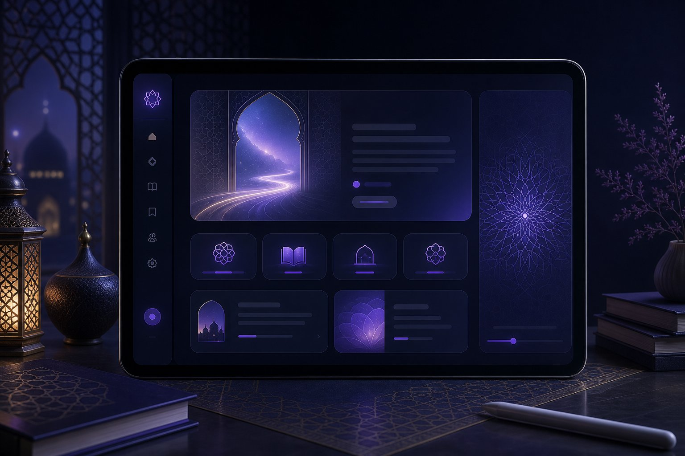
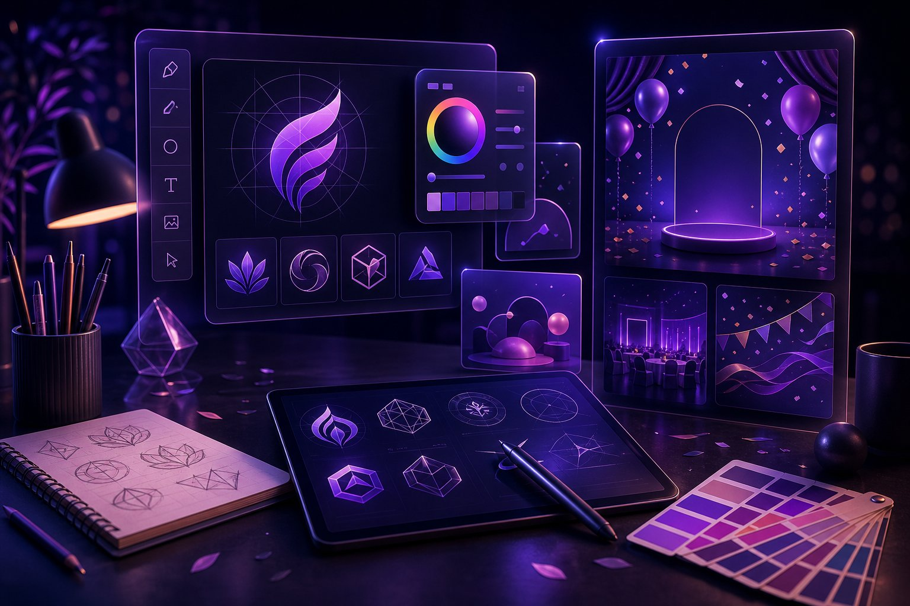

Projects
Project work shaped by learning, design, and AI assistance.
Each project is part of Nilofar's growth as a web developer, creative designer, and future AI developer.



Projects
Each project is part of Nilofar's growth as a web developer, creative designer, and future AI developer.

